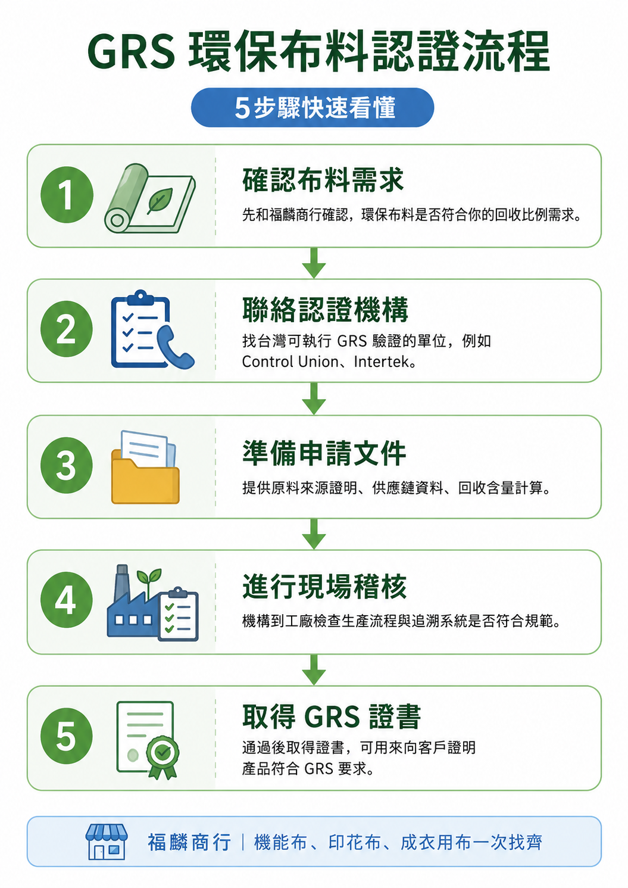

2026永續布料不再是趨勢，而是生存必備
越來越多品牌要求使用回收材料，歐盟也持續推動紡織品走向耐用、可回收，並提高回收纖維使用比例。對台灣布料供應商和設計師來說，這波趨勢既是壓力，也是機會。
目前歐盟方向以永續產品設計、供應鏈透明、Digital Product Passport 與回收纖維使用為核心，尚不適合寫成所有紡織品都有固定強制回收比例。對品牌來說，先把布料來源、回收成分與文件追溯整理清楚，會是更務實的第一步。
永續布料不再只是形象加分，而是品牌開發、出口合作與供應鏈溝通的基本題。福麟商行整理 2026 年設計師與成衣工廠最需要掌握的方向，並提供現貨與訂製兩種務實方案。
越來越多品牌要求使用回收材料，歐盟也持續推動紡織品走向耐用、可回收，並提高回收纖維使用比例。對台灣布料供應商和設計師來說，這波趨勢既是壓力，也是機會。
目前歐盟方向以永續產品設計、供應鏈透明、Digital Product Passport 與回收纖維使用為核心，尚不適合寫成所有紡織品都有固定強制回收比例。對品牌來說，先把布料來源、回收成分與文件追溯整理清楚，會是更務實的第一步。
不管選現貨還是訂製，都能同時兼顧成本、開發速度與永續要求。
如果你要出口或跟大品牌合作，認證文件會是重要溝通工具。常見方向包含 GRS（Global Recycled Standard）全球回收標準；若品牌要對外宣稱 GRS 或使用相關標章，通常需要確認供應鏈文件、Scope Certificate 與 Transaction Certificate。

小品牌可以先從選用具回收來源證明的布料開始，再依客戶、出口或通路需求評估是否進一步申請認證。福麟商行可先協助確認布料方向與回收材質需求。
一句話總結：用庫存現貨，經濟又環保；有特別需求，也能選訂製 recycle 布料。福麟商行不只賣布，更協助你把永續這件事真正落地。
直接加 LINE @424tvsxa 或來電 02-2987-1006，告訴我們用途、數量、回收比例需求與交期，我們協助你快速配布。